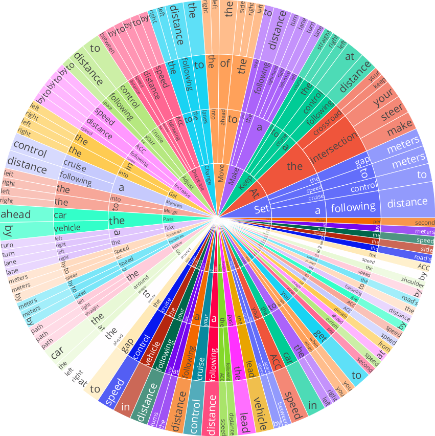

LaMPilot: An Open Benchmark Dataset for Autonomous Driving with Language Model Programs
Yunsheng Ma, Can Cui, Xu Cao, Wenqian Ye, Peiran Liu, Juanwu Lu, Amr Abdelraouf, Rohit Gupta,
Kyungtae Han, Aniket Bera, James M. Rehg and Ziran Wang
A novel framework for planning in the field of autonomous driving, rethinking the task as a
code-generation process that leverages established behavioral primitives.
Main Contributions:
1. We introduce the first benchmark for evaluating LLM-based agents in autonomous driving
contexts.
2. We propose a framework including an open simulator for executing policies, equipped with
scoring mechanisms.
3. Our LaMPilot provides LLM agents with a set of APIs that cover essential driving functions,
where safety criteria are
loaded into the APIs.
4. Our LaMPilot enables the translation of natural language instructions into actionable
strategies through code generation.
LaMPilot Framework Architecture
LaMPliot framework architecture. This diagram shows the workflows of the LaMPliot framework, illustrating the process from initialization to evaluation. Once initialized, a structured language generator interprets the simulator environment to establish the language context. The central LLM handles input prompts, utilizing predefined APIs and generating LMP. The LMP is then executed in the simulator. The executed policy is assessed by the evaluator, which provides a final score for the policy.
Autonomous driving function modules and message flow
TThe dataset is divided into three sets: training (3,900 samples), validation (500 samples), and testing (500 samples). The dataset contains a variety of instructions that reflect the diversity and unpredictability of real-world requirements. These instructions are categorized by maneuver types, such as turning, lane changing, and overtaking, as well as scenario types, including both highway and intersection settings. The right figure shows a distribution of the first four words in the instructions, highlighting the diversity of instructions in our dataset.
Evaluation of Baselines on LaMPilot